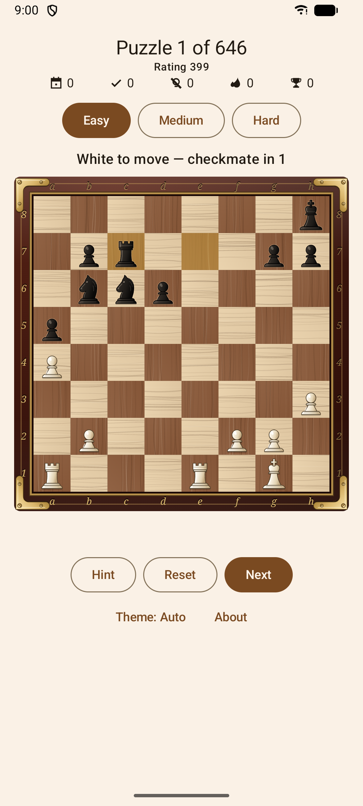

🧩
معماهای واقعی Lichess
هزاران تاکتیک برگرفته از پایگاهدادهٔ باز Lichess (مجوز CC0).

هزاران معمای واقعی از پایگاهدادهٔ Lichess را روی گوشی اندرویدی خود حل کنید. بهترین حرکت را پیدا کنید — بقیه خودش انجام میشود.
رایگان و متنباز · اندروید ۷ به بالا · بدون حساب کاربری، کاملاً آفلاین
بدون منوهای پیچیده و بدون ثبتنام. برنامه را باز میکنید و بیدرنگ مشغول حل کردن میشوید.
هزاران تاکتیک برگرفته از پایگاهدادهٔ باز Lichess (مجوز CC0).
بهترین حرکت را بیابید؛ حریف بهصورت خودکار پاسخ میدهد، درست مثل یک بازی واقعی.
تعداد حلشدهها و زنجیرهٔ شما روی دستگاه ذخیره میشود تا از همانجا ادامه دهید.
بدون حساب کاربری و بدون اینترنت. همهٔ معماها داخل برنامه قرار دارند.
مهرهها را با لمس خانهها یا کشیدن جابهجا کنید — صفحهای روان ساختهشده با Compose.
با مجوز Apache-2.0. بدون تبلیغات و بدون ردیابی.
وضعیتی واقعی از یک بازی نمایش داده میشود که نوبت یکی از طرفهاست.
مهره را لمس کنید یا بکشید. در صورت اشتباه میتوانید دوباره تلاش کنید.
حریف تا حلشدن معما بهصورت خودکار پاسخ میدهد.
معمای بعدی را حل کنید. پیشرفت شما روی دستگاه ذخیره میشود.

یک پروژهٔ چندماژولهٔ Kotlin — یک موتور شطرنج خالص روی JVM و یک رابط کاربری Jetpack Compose — با پوشش تست ۱۰۰٪. کد را بخوانید و خودتان بسازید.